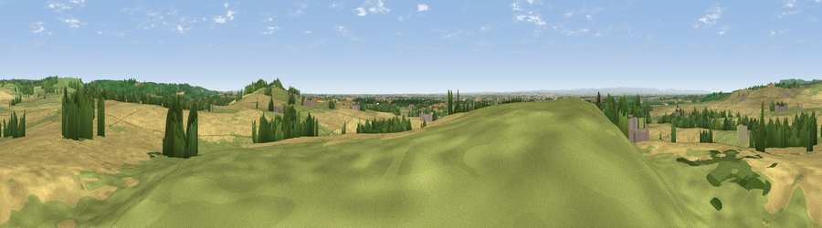

Viewpoint near Crayke
#10202 in England · top 22% of its area beats it · near CraykeWhere it is
The exact computed spot (SE 54375 71625). Click the marker for map links.
The view, rendered

A 360° render of this exact spot computed from the terrain model, tree cover and land cover — summer colours, afternoon light, calibrated against photographs of famous viewpoints. Real trees, hedges and buildings will differ in detail.
The panorama
Grey silhouette: terrain skyline in each direction (720 bearings, Earth curvature and refraction included). Dashed green: skyline with trees (+15 m) and buildings (+8 m) as obstacles. Blue strip: how far the ground is visible on each bearing.
Where the view opens
Wedge length = distance to the farthest visible ground on that bearing (vegetation-aware). Rings at 10, 25 and 50 km.
What fills the view
63% cropland · 29% grassland · 7% woodland ·
Angular shares of the visible panorama (visual magnitude), not map area. Landscape diversity 0.38 (0–1 Shannon).
Key numbers
More beautiful places nearby
The staircase of upgrades: each row has a higher view potential than everything closer. Driving times are estimates from straight-line distance, calibrated against real road routing — check an actual route before setting out.
| Place | Direction | Drive | Score |
|---|---|---|---|
| Viewpoint near Crayke | ESE · 1 km | ~4 min | 69.2 |
| Viewpoint near Oulston | NNE · 3 km | ~7 min | 70.4 |
| Viewpoint near Brandsby | E · 6 km | ~12 min | 71.8 |
| Viewpoint near Wass | N · 8 km | ~16 min | 72.6 |
| Viewpoint near Ampleforth | NNE · 9 km | ~18 min | 74.9 |
| Viewpoint near Ampleforth | NE · 9 km | ~18 min | 76.6 |
| Viewpoint near Kilburn | NNW · 10 km | ~20 min | 79.3 |
| Hood Hill | NNW · 10 km | ~20 min | 79.6 |
54.13760, -1.16924 · source: screening · position refined by local search. Computed location — check access rights before visiting.